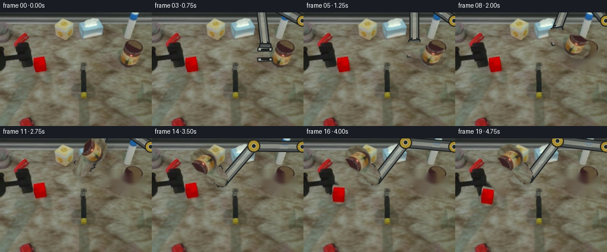
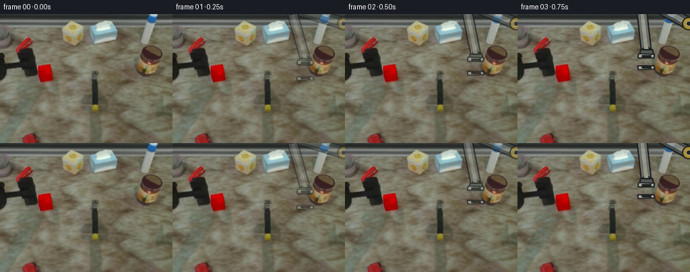

CODING AGENTS AS PIXEL WORLD MODELS
traex/GPT-5.6-Sol · common50_0049
点击播放 · 原生 RGB 像素
逐轮保存的候选
回放视频、检查图与代码变化。
每份候选均可单独播放。实际图片检查记录在下方工具轨迹中。
候选 01播放与检查图
点击播放 · 原生 RGB 像素


展开代码变化
--- 上一保存版本
+++ 本次保存版本
@@ -0,0 +1,173 @@
+from pathlib import Path
+import math
+import cv2
+import numpy as np
+from PIL import Image, ImageDraw
+import artifact_io
+
+CASE = Path(__file__).resolve().parent
+W,H = 256,192
+src = np.array(Image.open(CASE/'first_frame.png').convert('RGB'))
+
+# Antialiased polygon mask helper (the masks include the object's natural edge pixels).
+def poly_mask(points, blur=.65):
+ m=np.zeros((H,W),np.uint8)
+ cv2.fillPoly(m,[np.asarray(points,np.int32)],255,lineType=cv2.LINE_AA)
+ if blur: m=cv2.GaussianBlur(m,(0,0),blur)
+ return m
+
+tool_mask=poly_mask([(171,58),(178,54),(199,54),(207,58),(213,60),(226,58),
+ (239,64),(245,74),(243,86),(235,95),(218,96),(207,91),
+ (201,82),(188,80),(175,75)], .55)
+block_mask=poly_mask([(55,73),(72,72),(80,78),(82,90),(78,101),(63,104),
+ (54,97),(51,85)], .5)
+
+def inpaint_rgb(image, mask, radius=5):
+ # TELEA is used only to reconstruct the stationary wooden/grey work surface.
+ return cv2.cvtColor(cv2.inpaint(cv2.cvtColor(image,cv2.COLOR_RGB2BGR),
+ (mask>18).astype(np.uint8)*255,radius,cv2.INPAINT_TELEA),
+ cv2.COLOR_BGR2RGB)
+
+bg_no_tool=inpaint_rgb(src,tool_mask,6)
+bg_clear=inpaint_rgb(bg_no_tool,block_mask,6)
+
+def ease(x):
+ x=max(0.,min(1.,x)); return x*x*(3-2*x)
+
+def tool_pose(f):
+ # Pivot is the silver head, which is what the gripper holds.
+ if f<=4: return (190.,68.,0.)
+ if f<=8:
+ u=ease((f-4)/4); return (190-16*u,68-25*u,-10*u)
+ poses={9:(166,42,5),10:(154,43,35),11:(140,47,70),12:(126,52,110),
+ 13:(116,58,140),14:(111,62,150),15:(112,62,158),
+ 16:(113,59,145),17:(114,57,138),18:(114,57,142),19:(114,57,145)}
+ return poses[f]
+
+def wrist_pose(f):
+ if f==0:return (199.,88.,0.)
+ if f<4:
+ # open jaws descend smoothly onto the hammer head
+ u=ease(f/4); return (199-9*u,87-19*u,0.)
+ return tool_pose(f)
+
+def affine_for(pivot, angle, origin=(190.,68.)):
+ # OpenCV's positive visual rotation is counter-clockwise in Cartesian terms.
+ M=cv2.getRotationMatrix2D(origin,angle,1.0)
+ q=M@np.array([origin[0],origin[1],1.])
+ M[:,2]+=np.array(pivot[:2])-q
+ return M
+
+def warp_rgba(image, mask, pivot, angle, origin=(190.,68.)):
+ M=affine_for(pivot,angle,origin)
+ rgb=cv2.warpAffine(image,M,(W,H),flags=cv2.INTER_CUBIC,
+ borderMode=cv2.BORDER_CONSTANT,borderValue=(0,0,0))
+ a=cv2.warpAffine(mask,M,(W,H),flags=cv2.INTER_LINEAR,
+ borderMode=cv2.BORDER_CONSTANT,borderValue=0)
+ return rgb,a
+
+def blend(base,over,alpha):
+ a=(alpha.astype(np.float32)/255.)[:,:,None]
+ return np.clip(base.astype(np.float32)*(1-a)+over.astype(np.float32)*a,0,255).astype(np.uint8)
+
+def capsule(draw, a,b,width, fill, outline=(35,38,37,255), ow=3):
+ # PIL high-resolution coordinates are supplied by caller.
+ ax,ay=a; bx,by=b; dx=bx-ax;dy=by-ay; L=max(1,math.hypot(dx,dy)); nx=-dy/L;ny=dx/L
+ hw=width/2
+ p=[(ax+nx*hw,ay+ny*hw),(bx+nx*hw,by+ny*hw),(bx-nx*hw,by-ny*hw),(ax-nx*hw,ay-ny*hw)]
+ draw.polygon(p,fill=fill)
+ draw.line(p+[p[0]],fill=outline,width=ow,joint='curve')
+ r=hw
+ draw.ellipse((ax-r,ay-r,ax+r,ay+r),fill=fill,outline=outline,width=ow)
+ draw.ellipse((bx-r,by-r,bx+r,by+r),fill=fill,outline=outline,width=ow)
+
+def ik_elbow(anchor,end,L1=82,L2=82):
+ ax,ay=anchor; ex,ey=end; dx=ex-ax;dy=ey-ay;d=max(1,math.hypot(dx,dy)); d=min(d,L1+L2-1)
+ x=(L1*L1-L2*L2+d*d)/(2*d); h=math.sqrt(max(0,L1*L1-x*x))
+ ux,uy=dx/d,dy/d
+ # branch toward the lower/right part of the existing workspace
+ return (ax+ux*x-uy*h, ay+uy*x+ux*h)
+
+def robot_layer(f):
+ S=3
+ layer=Image.new('RGBA',(W*S,H*S),(0,0,0,0)); d=ImageDraw.Draw(layer,'RGBA')
+ px,py,ang=wrist_pose(f)
+ th=math.radians(ang); # local normal toward the arm
+ mount=(px+math.sin(th)*15, py-math.cos(th)*15)
+ anchor=(254.,14.); elbow=ik_elbow(anchor,mount)
+ sc=lambda p:(p[0]*S,p[1]*S)
+ # rigid, constant-width two-link arm, dark rim + brushed metal inner highlight
+ capsule(d,sc(anchor),sc(elbow),17*S,(73,78,76,255),(25,28,28,255),2*S)
+ capsule(d,sc(elbow),sc(mount),15*S,(104,109,104,255),(29,31,30,255),2*S)
+ # narrow specular ridges make the metal fit the illumination in the first frame
+ capsule(d,sc(anchor),sc(elbow),7*S,(143,147,137,210),(143,147,137,0),1)
+ capsule(d,sc(elbow),sc(mount),6*S,(159,162,149,210),(159,162,149,0),1)
+ # Yellow joint housings and black center bosses.
+ for x,y,r in [(anchor[0],anchor[1],10),(elbow[0],elbow[1],11)]:
+ d.ellipse(((x-r)*S,(y-r)*S,(x+r)*S,(y+r)*S),fill=(169,142,52,255),outline=(43,40,27,255),width=2*S)
+ d.ellipse(((x-4)*S,(y-4)*S,(x+4)*S,(y+4)*S),fill=(35,37,35,255),outline=(184,184,157,255),width=S)
+ # Wrist collar, aligned to the tool.
+ def local(x,y): return ((px+x*math.cos(th)-y*math.sin(th))*S,
+ (py+x*math.sin(th)+y*math.cos(th))*S)
+ collar=[local(-9,-18),local(9,-18),local(10,-8),local(-10,-8)]
+ d.polygon(collar,fill=(81,86,83,255),outline=(25,28,27,255))
+ d.line(collar+[collar[0]],fill=(25,28,27,255),width=2*S,joint='curve')
+ # Before contact, keep the jaws visibly open; then clamp firmly on the silver head.
+ sep=(12-5*ease(f/4)) if f<4 else 7
+ for sgn in (-1,1):
+ y=sgn*sep
+ jaw=[local(-13,y-sgn*2),local(11,y-sgn*2),local(12,y+sgn*3),local(-12,y+sgn*4)]
+ d.polygon(jaw,fill=(167,171,163,255),outline=(31,34,33,255))
+ d.line(jaw+[jaw[0]],fill=(31,34,33,255),width=2*S,joint='curve')
+ # dark rubber gripping pad at the head
+ pad=[local(-7,y-sgn*1),local(7,y-sgn*1),local(7,y+sgn*2),local(-7,y+sgn*2)]
+ d.polygon(pad,fill=(31,33,31,255))
+ return np.array(layer.resize((W,H),Image.Resampling.LANCZOS))
+
+def add_shadow(frame,pivot,ang,strength=65):
+ # Soft contact shadow below the lifted/swinging tool.
+ blank=np.zeros((H,W),np.uint8)
+ M=affine_for((pivot[0]+3,pivot[1]+8),ang)
+ a=cv2.warpAffine(tool_mask,M,(W,H),flags=cv2.INTER_LINEAR,borderValue=0)
+ a=cv2.GaussianBlur(a,(0,0),4).astype(np.float32)*(strength/255.)
+ out=frame.astype(np.float32); out*=1-(a[:,:,None]/255.)
+ return np.clip(out,0,255).astype(np.uint8)
+
+frames=[]
+for f in range(20):
+ if f==0:
+ frames.append(src.copy()); continue
+ base=(bg_no_tool.copy() if f>=5 else src.copy())
+ if f>=15: base=bg_clear.copy()
+ px,py,ang=tool_pose(f)
+ if f>=5: base=add_shadow(base,(px,py),ang,48 if f<9 else 32)
+ # The arm is behind both the held tool and its jaws.
+ rob=robot_layer(f)
+ # During first approach use a gentle opacity ramp to avoid a hard frame-0 reveal.
+ opa={1:.46,2:.72}.get(f,1.0)
+ rob_a=(rob[:,:,3].astype(np.float32)*opa).astype(np.uint8)
+ base=blend(base,rob[:,:,:3],rob_a)
+ # Fast swing: a very restrained trailing exposure communicates impact speed.
+ if 11<=f<=14:
+ pprev=tool_pose(f-1); ghost,ga=warp_rgba(src,tool_mask,pprev[:2],pprev[2])
+ base=blend(base,ghost,(ga.astype(np.float32)*.16).astype(np.uint8))
+ if f>=5:
+ obj,oa=warp_rgba(src,tool_mask,(px,py),ang)
+ base=blend(base,obj,oa)
+ # At impact the block is knocked aside and tips, rather than deforming.
+ if f>=15:
+ moves={15:(-3,3,-7),16:(-8,7,-12),17:(-11,9,-15),18:(-13,10,-17),19:(-13,10,-17)}
+ dx,dy,ba=moves[f]
+ bo,bm=warp_rgba(src,block_mask,(66.5+dx,88+dy),ba,origin=(66.5,88.))
+ # grounded shadow for the displaced block
+ sh=np.zeros((H,W,3),np.uint8)
+ sm=cv2.GaussianBlur(cv2.warpAffine(block_mask,affine_for((66.5+dx+2,88+dy+4),ba,origin=(66.5,88.)),(W,H)),(0,0),2)
+ base=blend(base,sh,(sm.astype(np.float32)*.18).astype(np.uint8))
+ base=blend(base,bo,bm)
+ # redraw only the compact jaws above the object by adding the full robot at low alpha near wrist;
+ # the existing layer already has clearly visible jaw edges, so preserve texture instead of obscuring it.
+ frames.append(base)
+
+frames=np.stack(frames).astype(np.uint8)
+assert frames.shape==(20,192,256,3) and np.array_equal(frames[0],src)
+artifact_io.save(frames,CASE)
候选 02播放与检查图
点击播放 · 原生 RGB 像素

展开代码变化
--- 上一保存版本
+++ 本次保存版本
@@ -154,6 +154,12 @@
if f>=5:
obj,oa=warp_rgba(src,tool_mask,(px,py),ang)
base=blend(base,obj,oa)
+ # The held object must pass behind the fingers. Restore just the compact
+ # wrist/finger portion of the robot layer after compositing the tool.
+ yy,xx=np.ogrid[:H,:W]
+ near=((xx-px)**2+(yy-py)**2 < 20**2).astype(np.uint8)
+ top_a=(rob_a*near).astype(np.uint8)
+ base=blend(base,rob[:,:,:3],top_a)
# At impact the block is knocked aside and tips, rather than deforming.
if f>=15:
moves={15:(-3,3,-7),16:(-8,7,-12),17:(-11,9,-15),18:(-13,10,-17),19:(-13,10,-17)}
@@ -164,8 +170,6 @@
sm=cv2.GaussianBlur(cv2.warpAffine(block_mask,affine_for((66.5+dx+2,88+dy+4),ba,origin=(66.5,88.)),(W,H)),(0,0),2)
base=blend(base,sh,(sm.astype(np.float32)*.18).astype(np.uint8))
base=blend(base,bo,bm)
- # redraw only the compact jaws above the object by adding the full robot at low alpha near wrist;
- # the existing layer already has clearly visible jaw edges, so preserve texture instead of obscuring it.
frames.append(base)
frames=np.stack(frames).astype(np.uint8)
候选 03播放与检查图
可观测工具轨迹
实际执行的命令与返回图片。
命令 1exit 0
/bin/bash -lc "cat GENERATION_RULES.md && printf '\\n---PROMPT---\\n' && cat prompt.txt"
命令 2exit 127
/bin/bash -lc "find . -maxdepth 2 -type f -printf '%p %s bytes\\n' | sort && file first_frame.png"
命令 3exit 0
/bin/bash -lc "cat task_spec.json; sed -n '1,240p' artifact_io.py; python3 - <<'PY'
from PIL import Image
import numpy as np
im=np.array(Image.open('first_frame.png').convert('RGB'))
print(im.shape,im.dtype,im.min(),im.max())
# quantized color histogram
q=(im//16)*16
u,c=np.unique(q.reshape(-1,3),axis=0,return_counts=True)
for i in np.argsort(c)[-30:][::-1]: print(tuple(u[i]),c[i])
PY"命令 4exit 2
/bin/bash -lc "cat > /tmp/analyze.py <<'PY'
from PIL import Image
import numpy as np
from collections import deque
im=np.array(Image.open('first_frame.png').convert('RGB'))
h,w,_=im.shape
conds={
'red':(im[:,:,0]>100)&(im[:,:,0]>im[:,:,1]*1.35)&(im[:,:,0]>im[:,:,2]*1.3),
'yellow':(im[:,:,0]>100)&(im[:,:,1]>70)&(im[:,:,0]>im[:,:,2]*1.4)&(im[:,:,1]>im[:,:,2]*1.25),
'silver':(im.min(2)>100)&((im.max(2)-im.min(2))<25),
'black':im.max(2)<55,
'bright':im.mean(2)>155,
}
def comps(mask):
seen=np.zeros(mask.shape,bool); out=[]
for y,x in zip(*np.where(mask)):
if seen[y,x]:continue
st=[(y,x)];seen[y,x]=1; pts=[]
while st:
yy,xx=st.pop();pts.append((yy,xx))
for dy,dx in ((0,1),(0,-1),(1,0),(-1,0)):
y2,x2=yy+dy,xx+dx
if 0<=y2<h and 0<=x2<w and mask[y2,x2] and not seen[y2,x2]:seen[y2,x2]=1;st.append((y2,x2))
if len(pts)>=3:
ys=[p[0] for p in pts];xs=[p[1] for p in pts];out.append((len(pts),(min(xs),min(ys),max(xs),max(ys)),(sum(xs)//len(xs),sum(ys)//len(ys))))
return sorted(out,reverse=True)
for k,v in conds.items():
print('\\n',k, 'total',v.sum())
print(*comps(v)[:20],sep='\\n')
# ascii based semantic thresholds every 4x4 majority
chars=[]
for y in range(0,h,4):
s=''
for x in range(0,w,4):
p=im[y:y+4,x:x+4]; mean=p.mean((0,1)); r,g,b=mean
if r>g*1.35 and r>b*1.3 and r>90:c='R'
elif r>100 and g>65 and r>b*1.35 and g>b*1.15:c='Y'
elif max(mean)<55:c='#'
elif min(mean)>135 and max(mean)-min(mean)<30:c='S'
elif mean.mean()>145:c='s'
else:c='.'
s+=c
chars.append(s)
print('\\nASCII'); print('\\n'.join(chars))
PY
python3 /tmp/analyze.py"命令 5exit 0
/bin/bash -lc "cat > .tmp/analyze.py <<'PY'
from PIL import Image
import numpy as np
im=np.array(Image.open('first_frame.png').convert('RGB'))
h,w,_=im.shape
conds={
'red':(im[:,:,0]>100)&(im[:,:,0]>im[:,:,1]*1.35)&(im[:,:,0]>im[:,:,2]*1.3),
'yellow':(im[:,:,0]>100)&(im[:,:,1]>70)&(im[:,:,0]>im[:,:,2]*1.4)&(im[:,:,1]>im[:,:,2]*1.25),
'silver':(im.min(2)>100)&((im.max(2)-im.min(2))<25),
'black':im.max(2)<55,
'bright':im.mean(2)>155,
}
def comps(mask):
seen=np.zeros(mask.shape,bool); out=[]
for y,x in zip(*np.where(mask)):
if seen[y,x]:continue
st=[(y,x)];seen[y,x]=1; pts=[]
while st:
yy,xx=st.pop();pts.append((yy,xx))
for dy,dx in ((0,1),(0,-1),(1,0),(-1,0)):
y2,x2=yy+dy,xx+dx
if 0<=y2<h and 0<=x2<w and mask[y2,x2] and not seen[y2,x2]:seen[y2,x2]=1;st.append((y2,x2))
if len(pts)>=3:
ys=[p[0] for p in pts];xs=[p[1] for p in pts];out.append((len(pts),(min(xs),min(ys),max(xs),max(ys)),(sum(xs)//len(xs),sum(ys)//len(ys))))
return sorted(out,reverse=True)
for k,v in conds.items():
print('\\n',k, 'total',v.sum())
print(*comps(v)[:20],sep='\\n')
print('\\nASCII')
for y in range(0,h,4):
s=''
for x in range(0,w,4):
mean=im[y:y+4,x:x+4].mean((0,1)); r,g,b=mean
if r>g*1.35 and r>b*1.3 and r>90:c='R'
elif r>100 and g>65 and r>b*1.35 and g>b*1.15:c='Y'
elif max(mean)<55:c='#'
elif min(mean)>135 and max(mean)-min(mean)<30:c='S'
elif mean.mean()>145:c='s'
else:c='.'
s+=c
print(s)
PY
python3 .tmp/analyze.py"命令 6exit 0
/bin/bash -lc "cat > .tmp/maps.py <<'PY'
from PIL import Image
import numpy as np
im=np.array(Image.open('first_frame.png').convert('RGB')).astype(float)
# classifier hue-like
def cls(a):
r,g,b=a
mx=max(a);mn=min(a)
if mx<45:return '#'
if r>90 and r>g*1.32 and r>b*1.28:return 'R'
if r>100 and g>65 and r>b*1.28 and g>b*1.15:return 'Y'
if b>r*1.15 and b>g*1.1:return 'B'
if g>r*1.18 and g>b*1.1:return 'G'
if mn>140 and mx-mn<30:return 'S'
if mx-mn<18:return 's'
if r>g*1.12 and r>b*1.12:return 'b' # brown
return '.'
for name,bb,step in [('left',(0,20,100,120),2),('center',(80,20,190,150),2),('right',(175,30,255,130),2),('bottom',(0,100,256,192),4)]:
x0,y0,x1,y1=bb
print('\\n'+name)
print(' '+''.join(str((x//10)%10) for x in range(x0,x1,step)))
for y in range(y0,y1,step):
print(f'{y:03}',end='')
for x in range(x0,x1,step): print(cls(im[y:y+step,x:x+step].mean((0,1))),end='')
print()
# region stats red regions expanded
for bb in [(15,25,55,65),(48,65,88,110),(195,60,240,95),(125,80,190,150)]:
x0,y0,x1,y1=bb;p=im[y0:y1,x0:x1]
print(bb,'mean',p.mean((0,1)),'minmax',p.min((0,1)),p.max((0,1)))
PY
python3 .tmp/maps.py"命令 7exit 0
/bin/bash -lc "python3 - <<'PY'
from PIL import Image
import numpy as np
im=np.array(Image.open('first_frame.png'))
pts=[(35,44),(66,87),(43,185),(207,79),(221,72),(218,78),(109,37),(167,93),(140,115),(140,139),(149,69),(101,116),(191,117),(211,134),(198,150),(189,64),(153,20),(107,21),(219,25), (128,95),(145,95),(150,95),(135,90),(140,100),(140,130)]
for x,y in pts:print((x,y),im[y,x], 'around',im[max(0,y-2):y+3,max(0,x-2):x+3].mean((0,1)).round(1))
# print 2x downsample as luminance code and dominant hue central 115:160 x 75:150
x0,y0,x1,y1=110,70,190,150
chars=' .:-=+*#%@'
for y in range(y0,y1,2):
out=''
for x in range(x0,x1,2):
p=im[y:y+2,x:x+2].mean((0,1));r,g,b=p; L=p.mean()
if r-g>30 and r-b>35: c='R'
elif r-b>28 and g-b>20: c='Y'
elif max(p)-min(p)<12: c=chars[min(9,int(L/256*10))]
else:c=chars[min(9,int(L/256*10))].lower()
out+=c
print(f'{y:03} {out}')
PY"命令 8exit 0
/bin/bash -lc "python3 - <<'PY'
try: import cv2; print('cv2',cv2.__version__)
except Exception as e: print(e)
PY"命令 9exit 0
/bin/bash -lc "python3 - <<'PY'
import cv2,numpy as np
from PIL import Image
im=cv2.imread('first_frame.png'); rgb=im[:,:,::-1];r,g,b=[rgb[:,:,i].astype(int) for i in range(3)]
poly=np.zeros((192,256),np.uint8); cv2.fillPoly(poly,[np.array([[171,57],[191,55],[205,59],[213,58],[225,57],[239,65],[243,78],[238,91],[225,95],[209,91],[200,83],[188,78],[174,75]])],1)
criteria=((r-b>23)&(g-b>8)&(r>75) | ((np.maximum.reduce([r,g,b])-np.minimum.reduce([r,g,b])<28)&(r>90)) | (np.maximum.reduce([r,g,b])<75)) & (poly>0)
# include edge-connected via dilations within polygon
m=criteria.astype(np.uint8)
for _ in range(3):m=(cv2.dilate(m,np.ones((3,3),np.uint8)) & poly)
# erode once? connected comps
n,l,st,cent=cv2.connectedComponentsWithStats(m)
print('total',m.sum())
for i in range(1,n):
if st[i,4]>10: print(st[i].tolist(),cent[i])
cv2.imwrite('.tmp/toolmask.png',m*255)
# red
red=((r>95)&(r>g*1.35)&(r>b*1.3)).astype(np.uint8)
n,l,st,cent=cv2.connectedComponentsWithStats(red)
for i in range(1,n):
if st[i,4]>100:print('red',st[i].tolist(),cent[i])
PY"命令 10exit 0
/bin/bash -lc "cat > generate.py <<'PY'
from pathlib import Path
import math
import cv2
import numpy as np
from PIL import Image, ImageDraw
import artifact_io
CASE = Path(__file__).resolve().parent
W,H = 256,192
src = np.array(Image.open(CASE/'first_frame.png').convert('RGB'))
# Antialiased polygon mask helper (the masks include the object's natural edge pixels).
def poly_mask(points, blur=.65):
m=np.zeros((H,W),np.uint8)
cv2.fillPoly(m,[np.asarray(points,np.int32)],255,lineType=cv2.LINE_AA)
if blur: m=cv2.GaussianBlur(m,(0,0),blur)
return m
tool_mask=poly_mask([(171,58),(178,54),(199,54),(207,58),(213,60),(226,58),
(239,64),(245,74),(243,86),(235,95),(218,96),(207,91),
(201,82),(188,80),(175,75)], .55)
block_mask=poly_mask([(55,73),(72,72),(80,78),(82,90),(78,101),(63,104),
(54,97),(51,85)], .5)
def inpaint_rgb(image, mask, radius=5):
# TELEA is used only to reconstruct the stationary wooden/grey work surface.
return cv2.cvtColor(cv2.inpaint(cv2.cvtColor(image,cv2.COLOR_RGB2BGR),
(mask>18).astype(np.uint8)*255,radius,cv2.INPAINT_TELEA),
cv2.COLOR_BGR2RGB)
bg_no_tool=inpaint_rgb(src,tool_mask,6)
bg_clear=inpaint_rgb(bg_no_tool,block_mask,6)
def ease(x):
x=max(0.,min(1.,x)); return x*x*(3-2*x)
def tool_pose(f):
# Pivot is the silver head, which is what the gripper holds.
if f<=4: return (190.,68.,0.)
if f<=8:
u=ease((f-4)/4); return (190-16*u,68-25*u,-10*u)
poses={9:(166,42,5),10:(154,43,35),11:(140,47,70),12:(126,52,110),
13:(116,58,140),14:(111,62,150),15:(112,62,158),
16:(113,59,145),17:(114,57,138),18:(114,57,142),19:(114,57,145)}
return poses[f]
def wrist_pose(f):
if f==0:return (199.,88.,0.)
if f<4:
# open jaws descend smoothly onto the hammer head
u=ease(f/4); return (199-9*u,87-19*u,0.)
return tool_pose(f)
def affine_for(pivot, angle, origin=(190.,68.)):
# OpenCV's positive visual rotation is counter-clockwise in Cartesian terms.
M=cv2.getRotationMatrix2D(origin,angle,1.0)
q=M@np.array([origin[0],origin[1],1.])
M[:,2]+=np.array(pivot[:2])-q
return M
def warp_rgba(image, mask, pivot, angle, origin=(190.,68.)):
M=affine_for(pivot,angle,origin)
rgb=cv2.warpAffine(image,M,(W,H),flags=cv2.INTER_CUBIC,
borderMode=cv2.BORDER_CONSTANT,borderValue=(0,0,0))
a=cv2.warpAffine(mask,M,(W,H),flags=cv2.INTER_LINEAR,
borderMode=cv2.BORDER_CONSTANT,borderValue=0)
return rgb,a
def blend(base,over,alpha):
a=(alpha.astype(np.float32)/255.)[:,:,None]
return np.clip(base.astype(np.float32)*(1-a)+over.astype(np.float32)*a,0,255).astype(np.uint8)
def capsule(draw, a,b,width, fill, outline=(35,38,37,255), ow=3):
# PIL high-resolution coordinates are supplied by caller.
ax,ay=a; bx,by=b; dx=bx-ax;dy=by-ay; L=max(1,math.hypot(dx,dy)); nx=-dy/L;ny=dx/L
hw=width/2
p=[(ax+nx*hw,ay+ny*hw),(bx+nx*hw,by+ny*hw),(bx-nx*hw,by-ny*hw),(ax-nx*hw,ay-ny*hw)]
draw.polygon(p,fill=fill)
draw.line(p+[p[0]],fill=outline,width=ow,joint='curve')
r=hw
draw.ellipse((ax-r,ay-r,ax+r,ay+r),fill=fill,outline=outline,width=ow)
draw.ellipse((bx-r,by-r,bx+r,by+r),fill=fill,outline=outline,width=ow)
def ik_elbow(anchor,end,L1=82,L2=82):
ax,ay=anchor; ex,ey=end; dx=ex-ax;dy=ey-ay;d=max(1,math.hypot(dx,dy)); d=min(d,L1+L2-1)
x=(L1*L1-L2*L2+d*d)/(2*d); h=math.sqrt(max(0,L1*L1-x*x))
ux,uy=dx/d,dy/d
# branch toward the lower/right part of the existing workspace
return (ax+ux*x-uy*h, ay+uy*x+ux*h)
def robot_layer(f):
S=3
layer=Image.new('RGBA',(W*S,H*S),(0,0,0,0)); d=ImageDraw.Draw(layer,'RGBA')
px,py,ang=wrist_pose(f)
th=math.radians(ang); # local normal toward the arm
mount=(px+math.sin(th)*15, py-math.cos(th)*15)
anchor=(254.,14.); elbow=ik_elbow(anchor,mount)
sc=lambda p:(p[0]*S,p[1]*S)
# rigid, constant-width two-link arm, dark rim + brushed metal inner highlight
capsule(d,sc(anchor),sc(elbow),17*S,(73,78,76,255),(25,28,28,255),2*S)
capsule(d,sc(elbow),sc(mount),15*S,(104,109,104,255),(29,31,30,255),2*S)
# narrow specular ridges make the metal fit the illumination in the first frame
capsule(d,sc(anchor),sc(elbow),7*S,(143,147,137,210),(143,147,137,0),1)
capsule(d,sc(elbow),sc(mount),6*S,(159,162,149,210),(159,162,149,0),1)
# Yellow joint housings and black center bosses.
for x,y,r in [(anchor[0],anchor[1],10),(elbow[0],elbow[1],11)]:
d.ellipse(((x-r)*S,(y-r)*S,(x+r)*S,(y+r)*S),fill=(169,142,52,255),outline=(43,40,27,255),width=2*S)
d.ellipse(((x-4)*S,(y-4)*S,(x+4)*S,(y+4)*S),fill=(35,37,35,255),outline=(184,184,157,255),width=S)
# Wrist collar, aligned to the tool.
def local(x,y): return ((px+x*math.cos(th)-y*math.sin(th))*S,
(py+x*math.sin(th)+y*math.cos(th))*S)
collar=[local(-9,-18),local(9,-18),local(10,-8),local(-10,-8)]
d.polygon(collar,fill=(81,86,83,255),outline=(25,28,27,255))
d.line(collar+[collar[0]],fill=(25,28,27,255),width=2*S,joint='curve')
# Before contact, keep the jaws visibly open; then clamp firmly on the silver head.
sep=(12-5*ease(f/4)) if f<4 else 7
for sgn in (-1,1):
y=sgn*sep
jaw=[local(-13,y-sgn*2),local(11,y-sgn*2),local(12,y+sgn*3),local(-12,y+sgn*4)]
d.polygon(jaw,fill=(167,171,163,255),outline=(31,34,33,255))
d.line(jaw+[jaw[0]],fill=(31,34,33,255),width=2*S,joint='curve')
# dark rubber gripping pad at the head
pad=[local(-7,y-sgn*1),local(7,y-sgn*1),local(7,y+sgn*2),local(-7,y+sgn*2)]
d.polygon(pad,fill=(31,33,31,255))
return np.array(layer.resize((W,H),Image.Resampling.LANCZOS))
def add_shadow(frame,pivot,ang,strength=65):
# Soft contact shadow below the lifted/swinging tool.
blank=np.zeros((H,W),np.uint8)
M=affine_for((pivot[0]+3,pivot[1]+8),ang)
a=cv2.warpAffine(tool_mask,M,(W,H),flags=cv2.INTER_LINEAR,borderValue=0)
a=cv2.GaussianBlur(a,(0,0),4).astype(np.float32)*(strength/255.)
out=frame.astype(np.float32); out*=1-(a[:,:,None]/255.)
return np.clip(out,0,255).astype(np.uint8)
frames=[]
for f in range(20):
if f==0:
frames.append(src.copy()); continue
base=(bg_no_tool.copy() if f>=5 else src.copy())
if f>=15: base=bg_clear.copy()
px,py,ang=tool_pose(f)
if f>=5: base=add_shadow(base,(px,py),ang,48 if f<9 else 32)
# The arm is behind both the held tool and its jaws.
rob=robot_layer(f)
# During first approach use a gentle opacity ramp to avoid a hard frame-0 reveal.
opa={1:.46,2:.72}.get(f,1.0)
rob_a=(rob[:,:,3].astype(np.float32)*opa).astype(np.uint8)
base=blend(base,rob[:,:,:3],rob_a)
# Fast swing: a very restrained trailing exposure communicates impact speed.
if 11<=f<=14:
pprev=tool_pose(f-1); ghost,ga=warp_rgba(src,tool_mask,pprev[:2],pprev[2])
base=blend(base,ghost,(ga.astype(np.float32)*.16).astype(np.uint8))
if f>=5:
obj,oa=warp_rgba(src,tool_mask,(px,py),ang)
base=blend(base,obj,oa)
# At impact the block is knocked aside and tips, rather than deforming.
if f>=15:
moves={15:(-3,3,-7),16:(-8,7,-12),17:(-11,9,-15),18:(-13,10,-17),19:(-13,10,-17)}
dx,dy,ba=moves[f]
bo,bm=warp_rgba(src,block_mask,(66.5+dx,88+dy),ba,origin=(66.5,88.))
# grounded shadow for the displaced block
sh=np.zeros((H,W,3),np.uint8)
sm=cv2.GaussianBlur(cv2.warpAffine(block_mask,affine_for((66.5+dx+2,88+dy+4),ba,origin=(66.5,88.)),(W,H)),(0,0),2)
base=blend(base,sh,(sm.astype(np.float32)*.18).astype(np.uint8))
base=blend(base,bo,bm)
# redraw only the compact jaws above the object by adding the full robot at low alpha near wrist;
# the existing layer already has clearly visible jaw edges, so preserve texture instead of obscuring it.
frames.append(base)
frames=np.stack(frames).astype(np.uint8)
assert frames.shape==(20,192,256,3) and np.array_equal(frames[0],src)
artifact_io.save(frames,CASE)
PY
python3 generate.py
python3 - <<'PY'
from PIL import Image
import numpy as np
f=np.stack([np.array(Image.open(f'frames/{i:02}.png')) for i in range(20)])
print(f.shape,f.dtype,'frame0 exact',np.array_equal(f[0],np.array(Image.open('first_frame.png').convert('RGB'))))
for i in range(1,20):print(i, np.mean(np.abs(f[i].astype(float)-f[i-1].astype(float))).round(2),np.mean(np.any(f[i]"'!=f[i-1],2)).round(3))
PY'命令 11exit 0
/bin/bash -lc "python3 - <<'PY'
from PIL import Image
import numpy as np
for fi in [0,2,4,6,8,10,12,14,15,17,19]:
im=np.array(Image.open(f'frames/{fi:02}.png'))
print('\\nFRAME',fi)
# tiny edge-density map: each character represents 8x8, classify darkness/color plus edge
for y in range(0,192,8):
out=''
for x in range(0,256,8):
p=im[y:y+8,x:x+8].astype(float); m=p.mean((0,1));r,g,b=m; sd=p.std()
if r>g*1.35 and r>b*1.3 and r>90:c='R'
elif r>100 and g>65 and r>b*1.25 and g>b*1.12:c='Y'
elif max(m)<55:c='#'
elif sd>35:c='X'
elif max(m)-min(m)<15 and m.mean()>130:c='S'
elif m.mean()>125:c='s'
else:c='.'
out+=c
print(out)
PY"命令 12exit 0
/bin/bash -lc "python3 generate.py && ls -lh pixels.npz index.html inspection.png transition_check.png frames/00.png frames/19.png && python3 - <<'PY'
import numpy as np
from PIL import Image
z=np.load('pixels.npz')['pixels']; print('packed',z.shape,z.dtype)
a=np.array(Image.open('frames/00.png').convert('RGB')); b=np.array(Image.open('first_frame.png').convert('RGB'));print('exact',np.array_equal(a,b),'nframes',len(list(__import__('pathlib').Path('frames').glob('*.png'))))
PY"保存候选 3 份；完成命令 12 次；可验证图片返回 0 张。原始 API 响应与完整日志保留在本地。